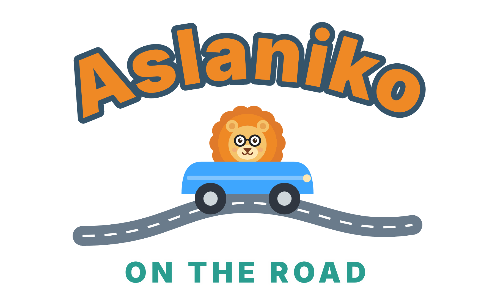

Bilgisayarda: sağ ok tuşu gaz, boşluk tuşu zıplama, Alt Gr turbo, H korna.Oyun hiçbir kişisel bilgi toplamaz ve internete bağlanmaz. Ayarlar yalnızca bu cihazda saklanır.
Oyun Tasarım: DaykoAslaniko On the Road · v0.1